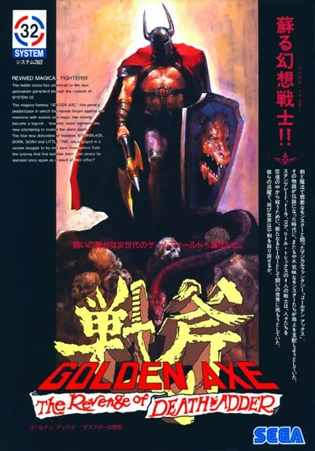

MAME (lr-mame2003)
Golden Axe: The Revenge of Death Adder
- Año: 1992
- Desarrollador: Sega
- Género: Beat 'em up
Continuación de Golden Axe para recreativa. Death Adder ha vuelto a la vida y hay que derrotarlo de nuevo con uno de cuatro guerreros: Stern Blade, el bárbaro de la espada; Dora, la centauro; Trix, un joven elfo con una horca cuya magia hace crecer manzanos que curan; y Goah, un gigante que lleva a la espalda al enano Gilius, del primer juego. Se lucha cuerpo a cuerpo, se usa magia y se montan bestias, como mantis gigantes, escorpiones o un dragón esqueleto. Los escenarios son más vistosos e interactivos que en los anteriores y hay caminos que elegir.
Controles
Probado en la bartop (2026-11-17): arranca y los botones van como en la tabla. Para correr, dos toques rápidos a izquierda o derecha (hacia arriba o abajo no corre: es así en el juego). Tres botones. Cada jugador tiene su propia moneda: el jugador 2 la mete con el botón 2P. ⚠️ Sin probar en la bartop.
| Panel | Juego |
|---|---|
 | Atacar (tres golpes seguidos) · recoger pociones y comida (pulsar encima) |
 | Saltar · dar patadas (pulsarlo varias veces) |
 | Lanzar magia |
 | Correr (dos veces a izquierda o derecha) |
| + | Patada voladora o ataque giratorio (mata casi siempre de un golpe; en montura, bajarse) |
| + | Ataque en salto (saltar y luego atacar; corriendo, más fuerte) |
 | Empezar (jugador 1) |
 | Meter una moneda |
 | Meter una moneda y empezar (jugador 2) |
+  | Salir del juego |
El panel en MAME (lr-mame2003)

Argumento
Recopilado de internet (2026-11-16). Lo marcado con ⚠️ no está probado en la bartop.
El juego no trae historia en pantalla ni en sus instrucciones. Se entiende que Death Adder no murió del todo en el primer Golden Axe: ha recuperado el hacha dorada y vuelve para vengarse. Al empezar, sus hombres se llevan a los aldeanos en carros tirados por bestias.
Cuatro héroes nuevos le hacen frente: Stern Blade, un bárbaro con espada; Goah, un gigante con un hacha enorme que lleva a la espalda, en un saco, al enano Gilius Thunderhead del primer juego; Dora, una centauro con un bastón; y Trix, un joven elfo con una horca. Recorren aldeas, cuevas, bosques, una ciudad enemiga, tierras malditas y un muelle hasta llegar al castillo de Death Adder.
Final: derrotado en su plataforma, Death Adder invoca un halo de energía. De pronto aparecen los cuatro héroes y Gilius salta desde lo alto y le clava el hacha en la cabeza; los dos caen y estallan en una nube de magia. Los héroes se van volando a lomos de un dragón con el hacha. Después, todos los aldeanos, los héroes, las bestias y hasta Death Adder se reúnen en una fiesta con el letrero «See you next game!».
Fuentes
Jugabilidad
Recopilado de internet (2026-11-16). Lo marcado con ⚠️ no está probado en la bartop.
- Tipo de juego: beat 'em up de Sega (1992), placa System 32. Hasta 4 jugadores a la vez en la recreativa (en la bartop, 2).
- Estructura: 7 escenas en la versión de EE. UU. (la de la bartop), con dos cruces en los que se elige camino; los caminos no elegidos se juegan después (en la japonesa, 5 escenas y se saltan). Ver #🗺️ Guía de niveles.
- Personajes:
- Stern Blade: equilibrado; el mejor ataque corriendo. Magia: tormenta de fuego (9 pociones).
- Goah (con Gilius): el más lento, pero el que más daño hace. Magia: una calavera que petrifica a los enemigos; la más fuerte (13 pociones, solo una vez al empezar).
- Dora: la más rápida corriendo; muy buena atacando desde el aire. Magia: la tierra estalla con rayos (4 pociones).
- Trix: el más rápido andando. Su magia no ataca: hace crecer manzanos con fruta que cura a todos (6 pociones). El mejor para jugar a dobles.
- Dora y Trix son los más fáciles para empezar.
- Magia: cada personaje tiene un solo hechizo y gasta un número fijo de pociones. Si mueres con menos de las que necesitas, el juego te da las que faltan.
- Recoger: las pociones y la comida se cogen pulsando atacar encima, no pasando por encima. Barriles, estatuas, banderas y cofres se rompen y sueltan cosas.
- Monturas (bizarrians): mantis (normal y que escupe fuego), escorpión que paraliza con electricidad y dragón esqueleto que escupe fuego. Montados se pueden hacer casi todos los golpes; el giratorio te baja de la montura.
- Armas de asedio: ballestas y catapultas que se pueden disparar e incluso llevar montado. Los proyectiles enemigos se pueden destruir en el aire.
- Golpes avanzados: Estocada mortal (correr, saltar y pulsar atacar + abajo): el enemigo queda rodando con el arma clavada; los jefes la resisten. Martillo pilón a dos o más jugadores: atacar a la vez a un jefe aturdido.
- Jefes: todos tienen barra de vida y un «arrebato» invulnerable al levantarse.
Botones según las guías (⚠️ por confirmar)
| Recreativa | Panel | Acción |
|---|---|---|
| Botón 1 | | Atacar |
| Botón 2 | | Saltar |
| Botón 3 | | Magia |
Fuentes
Wikipedia · StrategyWiki: personajes · StrategyWiki: jugabilidad · mame2003.xml (3 botones)
Guía de niveles
Recopilado de internet (2026-11-16). Lo marcado con ⚠️ no está probado en la bartop.
Las escenas según StrategyWiki. En la versión de EE. UU. se juegan las dos ramas de cada cruce (⚠️ el orden exacto en el que salen, comprobarlo con el vídeo).
| Escena | Fases |
|---|---|
| Escena 1 | Rescatar a los aldeanos (catapulta, primeras monturas)Mujer salvaje roja y hermano malo rojofase de bonus |
| Escena 2 | Camino a la ciudad enemiga: cruce entre la cueva (tribu de nativos, muchas pociones) y el bosque (árboles vivientes, mucha comida) |
| Escena 3 | Colarse en la ciudad enemiga |
| Escena 4 | Hacia el castillo de Death Adder: cruce entre las tierras malditas y el muelle |
| Escena final | Derrotar a Death Adder en su plataforma |
- Jefes que se repiten: la mujer salvaje (roja y verde), el trol (con maza y con maza eléctrica) y la muerte (tres formas; la segunda y la tercera llaman refuerzos: las calaveras se convierten en esqueletos y las ramas, en árboles).
- Death Adder: su plataforma es pequeña y su anillo de energía cuesta esquivarlo, pero es buen sitio para la estocada mortal y para el ataque en equipo.
Objetos
Recopilado de internet (2026-11-16). Lo marcado con ⚠️ no está probado en la bartop.
| Objeto | Qué hace |
|---|---|
| Poción mágica | Suma magia. Se recoge pulsando atacar encima. Las sueltan ladrones, barriles y prisioneros liberados. |
| Comida (carne) | Recupera vida. |
| Manzanas (magia de Trix) | Recuperan la vida de todos los jugadores. |
| Barriles, estatuas, banderas, cofres | Se rompen; algunos guardan pociones o comida. |
| Ballesta y catapulta | Disparar a los enemigos; se pueden llevar montado. |
| Monturas | Mantis, mantis de fuego, escorpión eléctrico y dragón esqueleto. |
Fuentes
Trucos y secretos
Recopilado de internet (2026-11-16). Lo marcado con ⚠️ no está probado en la bartop.
Secretos
- Fase de bonus al final de algunas escenas, con pociones y comida extra.
- El mapa entre escenas lleva palabras en griego antiguo: «río», «cueva», «bosque», «ciudad», «cementerio», «mar» y, arriba, el nombre de un monstruo mitológico. El kanji del título se lee Senpu.
- Final con fiesta: tras los créditos se reúnen todos, enemigos incluidos.
Ajustes de la placa (dip switches)
Se cambian en el menú de MAME (en la bartop, Coin + Y → menú de RetroArch): dificultad (1 a 8), jugadores al empezar, vida inicial (16 a 48), sonido de demostración y tipo de mueble (2, 3 o 4 jugadores). ⚠️ Sin probar.
- Existen trucos de vidas, vida y magia infinitas para MAME (
cheat.dat); no se copian aquí.
Fuentes
Longplay

Partida completa de la recreativa, versión de EE. UU. (65 min), de World of Longplays: [Arcade Longplay [004] Golden Axe: The Revenge of Death Adder](https://www.youtube.com/watch?v=XfMfcrpKCAE).
Pulsa el minuto de un nivel para ver el vídeo desde ese punto.